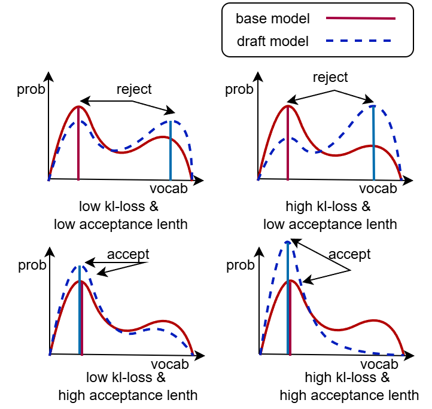
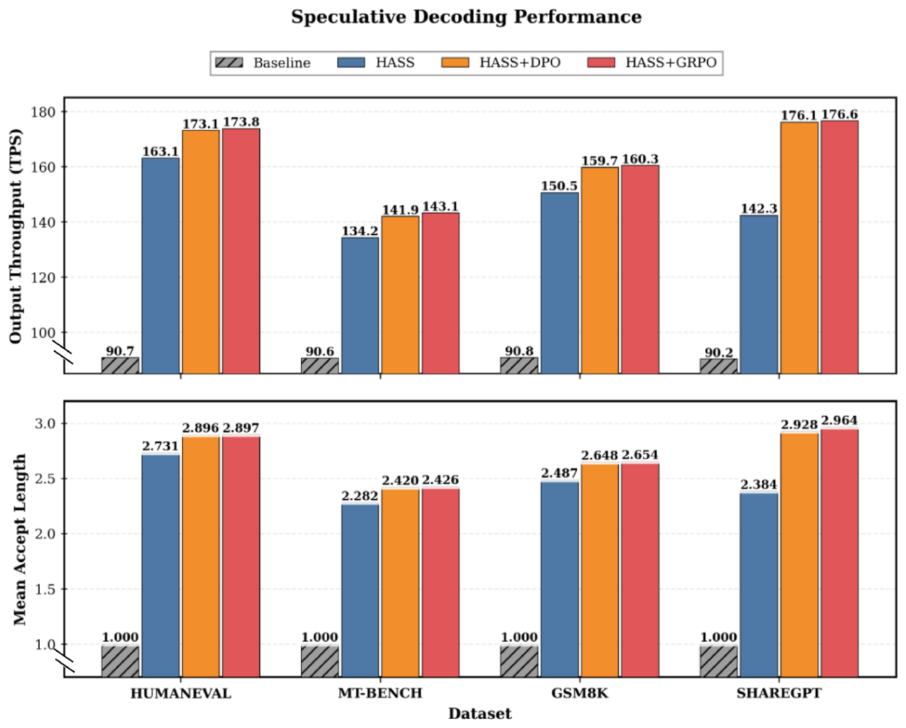

SHARE
Speculative decoding works like this: a small draft model guesses several tokens ahead, and the large model checks them all in one parallel pass, keeping every guess it agrees with. The average number of tokens kept per round is the "acceptance length". The longer it is, the fewer rounds the large model has to run, and the faster generation becomes. Draft models are usually trained by distillation, i.e. pushed to match the large model's whole output distribution. This paper from Hisense argues that this is the wrong target: verification only asks whether the draft's token is the one the large model would also pick, so the draft only needs to get the top few candidates in the right order, not reproduce the whole distribution. The proposed RCSD (a framework that keeps training the draft model with reinforcement learning) starts from a conventionally trained draft model and continues training it with DPO or GRPO. All training data is generated by the large model itself, with no human labels and no extra reward model. On Qwen3-1.7B and Llama-3.1-8B, acceptance length beats the baseline in every test setting. However, the abstract's "35% average improvement" and "1.35x end-to-end speedup" do not match the paper's own tables, as shown below.
1. The problem: what the draft model learns is not what it is used for
The paper has a single baseline, so it is worth being clear about it. In EAGLE, the draft model is tiny, and besides the tokens generated so far it reads the large model's hidden states directly to guess the next word. HASS (a distillation method for training EAGLE draft models) is the baseline, and RCSD also continues from a trained HASS draft model.
The distillation loss is forward KL divergence. Its character is "cover everything": any token the large model gives even a little probability to must also get some probability from the draft, or the draft is penalised. The trouble is that the draft is orders of magnitude smaller than the large model and lacks the capacity to learn the whole distribution. So its capacity gets spread over many low-probability tokens that will never be chosen.
The authors illustrate the mismatch in the figure below. Acceptance depends only on whether the draft's favourite token matches the large model's favourite. Bottom left is the ideal case: the distributions are close and the peaks line up. Bottom right, the draft's distribution is far from the large model's and the KL loss is high, but the peaks still line up, so the token is accepted anyway. The top two panels are the opposite: the peaks are misaligned, so the token is rejected whether KL is high or low. In other words, KL loss is only an indirect proxy for acceptance, and not a very accurate one.

So the authors change the goal. Instead of asking the draft to "imitate the whole distribution", they push it to concentrate probability on the path the large model is most likely to take, giving up the tail if necessary. In the paper's words, the draft moves from covering every mode (mode-covering) to grabbing the main one (mode-seeking).
2. Method: use the large model's own output as the positive example
Both training variants start from a trained HASS draft model and keep a frozen copy of these initial weights as a reference, so the new model cannot drift too far.
The DPO variant needs pairs of "good" and "bad" sequences. The good one is generated entirely by the large model token by token, representing what the draft ideally should have guessed. The bad one is generated by alternation: the large model writes 1 token, then the draft writes k tokens in a row without checking, then the large model writes 1 again, and so on (the paper does not state the value of k for the DPO variant). The draft's own stretches tend to drift away from what the large model would write, so this sequence is a natural negative example. Training raises the draft's probability of the good sequence relative to the reference and lowers its probability of the bad one.
One detail matters a lot here: the tokens in the bad sequence that the large model wrote are masked out of the loss. Without the mask, training would also push down these tokens, which are correct by construction. In addition, DPO is sensitive to sequence length, so the same mask positions are applied to the good sequence too, keeping the number of compared tokens equal on both sides.
The GRPO variant compares a whole group instead of a single pair. For each prompt there is one sequence generated directly by the large model and three written alternately: the large model writes 1 token, then the draft writes more without verification, and so on, with = 1, 2 or 3. Each sequence's score is the sum of two parts, each first standardised within the group. One is how natural the large model finds the sequence, measured by its log-probability under the large model, i.e. the sum of the log of each token's probability. The other is the share of the draft's tokens in it that the large model accepts. The sequence generated directly by the large model has no draft tokens, and the paper does not say how this term is computed for it. Sequences scoring above the group average are reinforced, those below are weakened.

What both variants share is that positives, negatives and scores are all produced automatically by the large model, so data can be built in bulk from live requests or any text prompts. This is where the "continual learning" in the title comes from: after deployment, the draft could keep training on new requests. The paper does not actually run such an experiment, as noted later.
3. Result one: acceptance length grows in every setting
The training data is 90% of the ShareGPT conversations. Testing uses HumanEval (code), MT-Bench (multi-turn dialogue), GSM8K (maths) and the remaining ShareGPT, so only the last one matches the training distribution, which matters later. "Steps" is how many tokens the draft guesses per round, tested from 3 to 6. The table below gives the average acceptance length over the four test sets, computed from the paper's Tables 1 and 2:
| Model | Steps | HASS | HASS + DPO | HASS + GRPO | GRPO relative gain |
|---|---|---|---|---|---|
| Qwen3-1.7B | 3 | 2.12 | 2.57 | 2.57 | +22% |
| Qwen3-1.7B | 6 | 2.26 | 2.97 | 3.00 | +33% |
| Llama-3.1-8B | 3 | 2.47 | 2.72 | 2.74 | +11% |
| Llama-3.1-8B | 6 | 2.78 | 3.26 | 3.29 | +18% |
Three things can be read from this table.
First, the gain is consistent. Across two models, four datasets and four step counts, 32 combinations in all, DPO and GRPO both beat HASS without a single exception, so this is not a cherry-picked result.
Second, the more tokens are guessed, the larger the gain. On Qwen3-1.7B with GSM8K, the gain is 31% at 3 steps and 49% at 6. The reason is that acceptance is a chain: once the first token is rejected, everything after it is discarded. A small rise in the draft's per-step hit rate is therefore amplified when it guesses 6 tokens in a row and all must be accepted. This means that if your deployment already uses long guess lengths, the method pays off more.
Third, GRPO and DPO are almost tied. Their averages differ by at most 0.03, and on individual datasets mostly by under 0.05. GRPO needs four sequences per prompt while DPO needs two, so DPO is the better deal. The conclusion claims GRPO converges faster early in training but shows no curve for it.
The two models also differ. Qwen3-1.7B gains a lot, while Llama-3.1-8B gains only 6% to 11% on code, dialogue and maths, and 24% to 43% only on ShareGPT. ShareGPT is exactly the training distribution, so part of Llama's large gain there may come from "training and testing on the same kind of data" rather than from a better training objective.
4. Result two: the speedup is smaller than the abstract says
A longer acceptance length only matters if it turns into real speed. The authors measured output tokens per second for Llama-3.1-8B-Instruct on SGLang 5.5.0 (the step count for this run is not stated; the acceptance lengths in the figure match the 3-step values above):
| Dataset | No speculation | HASS | HASS + DPO | HASS + GRPO | GRPO vs HASS |
|---|---|---|---|---|---|
| HumanEval | 90.7 | 163.1 | 173.1 | 173.8 | 1.07x |
| MT-Bench | 90.6 | 134.2 | 141.9 | 143.1 | 1.07x |
| GSM8K | 90.8 | 150.5 | 159.7 | 160.3 | 1.07x |
| ShareGPT | 90.2 | 142.3 | 176.1 | 176.6 | 1.24x |

The last column is computed from the table, and it shows that the speed gain comes mainly from in-distribution data. On the three general test sets the new method is only about 7% faster than HASS; only on ShareGPT is it 1.24x faster.
The abstract's "1.35x faster than HASS" has no matching number in this figure, and the conclusion instead says "1.2 to 1.35x", so the two statements also disagree. The "35% average gain in acceptance length" only roughly holds near 6 steps on Qwen3-1.7B, where it is 33%. Llama-3.1-8B's average gain is just 11% to 18%, so both headline numbers should be read as best cases, not typical ones.
An 11% longer acceptance length giving only 7% more speed is also expected. Each round includes not only drafting but also the large model's verification and scheduling overhead, which does not shrink when guesses get better. So gains in acceptance length are discounted before they show up as throughput.
5. Questions the paper leaves open
- Quality is not measured. The paper repeatedly says generation quality is unaffected. Under the standard speculative verification rule the final output is indeed decided by the large model, so in theory this holds. But the experiments report no quality metric at all, and in deployments with non-zero sampling temperature or approximate verification this needs checking.
- "Continual learning" and "domain-specific" in the title have no experiments. Training and testing use general datasets; there is no experiment that keeps training on new requests after deployment, and no evaluation in a vertical domain.
- The method description is inconsistent. The left of Figure 3 says positives and negatives come from tokens accepted and rejected during verification, while the method section describes "large model alone" versus "large model alternating with draft". The experiments use the latter.
- Cost data is missing. The paper does not report how much GPU time building the data and continuing training takes, and compares against HASS only, not other non-distillation ways of training drafts.
- Throughput is measured for a single configuration: one model, one inference framework, one step count, with no results under different concurrency.
6. What this means in practice
If you already serve an EAGLE- or HASS-style draft model, the paper offers a cheap next step: have the large model answer a batch of live or offline prompts, build positives and negatives as "large model alone" versus "large model alternating with draft", and run one round of DPO on your existing draft. The whole process needs no labelling and no change to inference code.
Estimate the benefit against your own traffic. If the training data matches live requests, acceptance length may rise by over 20% and throughput by 10% to 20%. If it does not, the general test sets on Llama suggest only about 7% more throughput. GRPO doubles the generation cost for almost the same gain and can be skipped at first. Before shipping, add the two checks the paper lacks: whether outputs match those without speculative decoding, and the GPU cost of continued training.
How did this read for you?
Hoot made a note. Thanks for the feedback.
One tap, no sign-in; tap again to undo. Only anonymous counts are kept, never who you are.
Discussion
Add experiment details, reproduction notes or a different take. Requires a GitHub sign-in.
Loading the discussion…